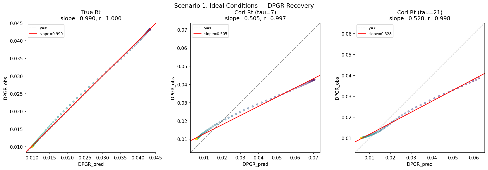
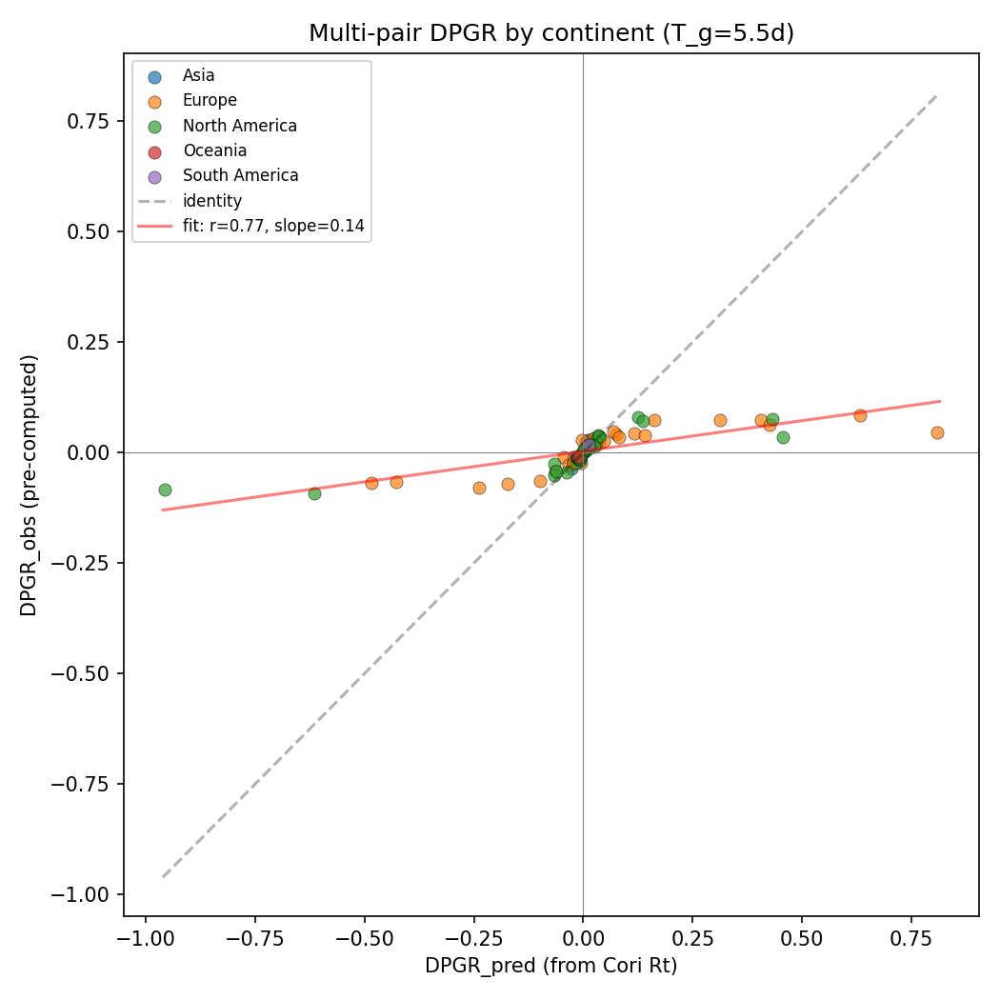
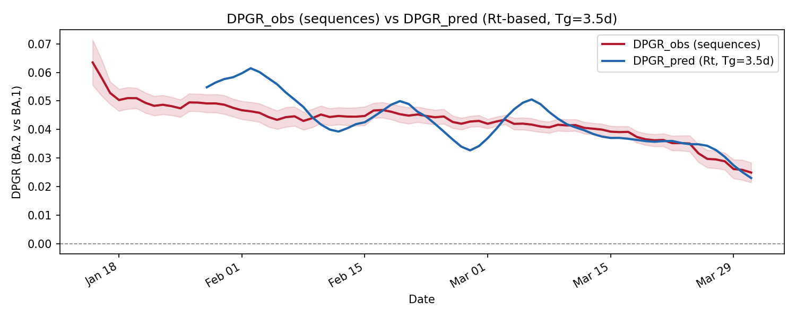

Propositions 1 and 2, linking DPGR to reproduction numbers, and their special cases are formalized and machine-verified in Lean 4 with Mathlib.
Abstract
During pandemics, public health agencies need to rapidly assess whether a new viral variant is more transmissible than existing lineages. For co-circulating variants, relative fitness can be expressed as a selective coefficient, as the differential population growth rate (DPGR) estimated from genomic surveillance, or, with additional assumptions, as a contrast in epidemic reproduction numbers $R_t$. We show that DPGR estimates a pairwise growth-rate difference. Under a specified generation-interval model, this difference can be transformed into reproduction-number space; in the equal-generation-time SIR special case, it reduces to a scaled difference in variant-specific $R_t$. Related growth-rate contrasts also appear in multinomial logistic and growth-advantage random-walk models, although those methods differ from DPGR in likelihood, smoothing, priors, and data inputs. We evaluate the theory across five SARS-CoV-2 and influenza analyses totaling more than 2,200 matched data points. SIR simulation recovers the expected mapping when the true $R_t$ is known, and retrospective SARS-CoV-2 analyses show sustained DPGR signals 43 to 65 days before variant dominance, with 95% sign accuracy in our analysis. DPGR is approximately transitive across lineage triplets, near zero for selected functionally similar sublineages, and directionally consistent across countries. These results connect sequence-count-based fitness estimates to reproduction-number contrasts through an assumption-explicit growth-rate bridge.
Problem
Public health agencies need to judge quickly whether a new viral variant is more transmissible than co-circulating lineages. The relationship between the sequence-derived differential population growth rate (DPGR) and epidemic reproduction numbers R_t has not been stated explicitly.
Approach
DPGR is identified with the classical selective coefficient, a pairwise growth-rate difference. A two-variant SIR model and general generation-interval maps then convert it into R_t space. The authors relate DPGR to multinomial logistic (softmax) and growth-advantage random-walk models. The core algebraic propositions are formalized in Lean 4 with Mathlib, and the theory is evaluated on SIR simulations and five SARS-CoV-2 and influenza analyses.

Figure 3: SIR simulation checks the DPGR/ R_{t} mapping and explains slopes below 1. Left: With the true instantaneous R_{t} , slope =0.99 ( r=0.999 ), confirming the expected SIR mapping. Middle: With Cori R_{t} at \tau=7 days, slope drops to 0.51 due to temporal smoothing amplifying apparent \Delta R_{t} by {\sim}1.93\times . Right: With \tau=21 days (matching the DPGR window), slope improves to
Results
SIR simulation recovers the expected mapping (slope 0.99) when the true R_t is known. Retrospective SARS-CoV-2 analyses show DPGR signals 43–65 days before variant dominance, with 95% sign accuracy. DPGR is approximately transitive across 115,624 lineage triplets and directionally consistent across countries.

Figure 2: Multi-pair SARS-CoV-2 consistency check: \mathrm{DPGR}_{\mathrm{obs}} vs. \mathrm{DPGR}_{\mathrm{pred}} for 89 lineage-pair transitions on five continents (Pearson r=0.77 , 99% sign agreement, p=1.8\times 10^{-18} ). Points are colored by continent; dashed line is the 1:1 reference line.

Figure 1: Empirical consistency check of the DPGR/ R_{t} mapping for BA.1 vs. BA.2 in England (January to April 2022). Left: \mathrm{DPGR}_{\mathrm{obs}} (from sequence log-ratios, red) and \mathrm{DPGR}_{\mathrm{pred}} (from Cori R_{t} , blue) over time; shading shows 95% bootstrap CI. Right: Scatter of observed vs. predicted (Pearson r=0.78 , slope =0.51 , 100% sign agreement, n=64 ). Dashed lin